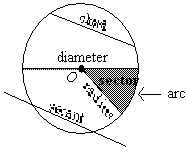
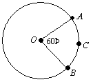

Circles
A circle is a set of points in a plane equidistant from a fixed point (the center of the circle). The perimeter of a circle is called the circumference.

A line segment from a circle to its center is a radius.
A line segment with both end points on a circle is a chord.
A chord passing though the center of a circle is a diameter.
A diameter can be viewed as two radii, and hence a diameter’s length is twice that of a radius.
A line passing through two points on a circle is a secant.
A piece of the circumference is an arc
The area bounded by the circumference and an angle with vertex at the center of the circle is a sector.
A tangent line to a circle intersects the circle at only one point. The radius of the circle is perpendicular to the tangent line at the point of tangency:

AB ≅ AC
Two tangents to a circle from a common exterior point of the circle are congruent:
An angle inscribed in a semicircle is a right angle:
A central angle has by definition the same measure as its intercepted arc:

An inscribed angle has one-half the measure of its intercepted arc:
A = πr2
C = 2πr
The area of a circle is πr2, and its circumference (perimeter) is 2πr, where r is the radius:
On the GRE, π ≈ 3 is a sufficient approximation for π. You don’t need π ≈ 3.14.
Example:
In the figure below, the circle has center O and its radius is 2. What
is the length of arc ACB ?
